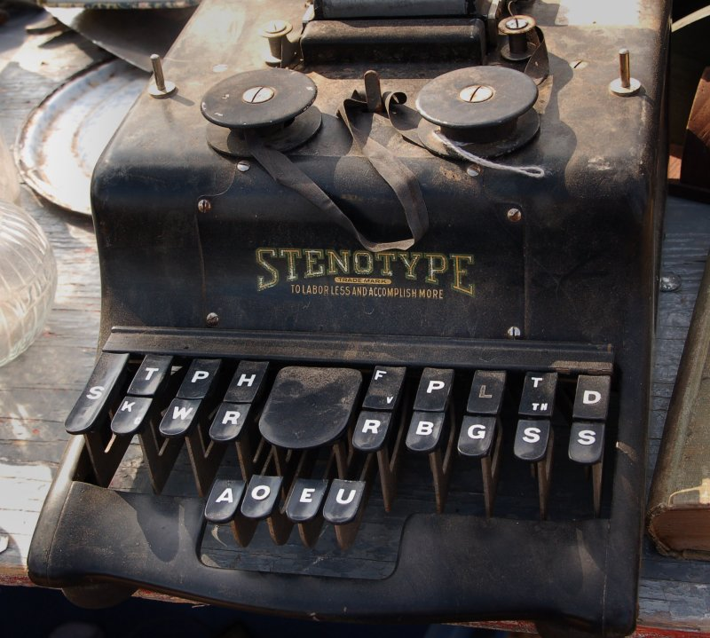
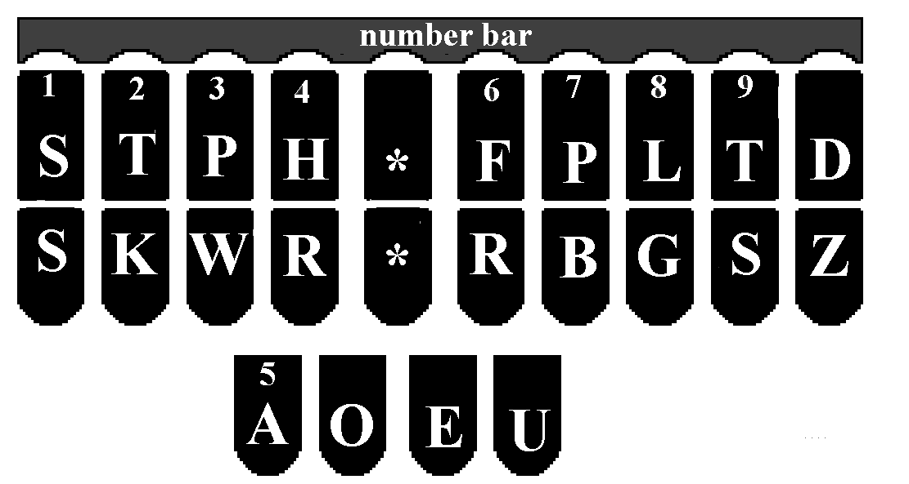

International
InternationalStenotypia - ale jaka?
2011-07-16 | autor: flamenco108
Pierwsza porcja rozmyślań, jakie przydarzają nam się z No-qankiem na temat stenotypii, czyli stenografii maszynowej, czyli klepanej w klawiaturę:
Najsampierw przydałoby się wyjaśnić szanownym czytelnikom, cóż to za cudo, ona stenotypia? Czy można jeszcze szybciej stukać w klawiaturę niż czyni to Helena Matouskova, czy Vaclav Mikula, czyli ponad 900 uderzeń na minutę? Pewnie po odpowiednim dopingu, da się, ale po co?
Prezentują oni bowiem iście kosmiczne prędkości, możliwe do osiągnięcia już nie samym treningiem, ale jeszcze niecodziennym talentem. A przecież ich tempo i tak dalej nie wystarcza, bez specjalistycznego oprogramowania Jaroslava Zaviacicia, do bieżącego notowania nawet dość sennego wykładu.
A zatem trzeba wdrożyć steno- czyli właśnie ścisnąć tekst do zapisania. Mamy tutaj, w wypadku stenografii literowej, dwie metody. Jedna, to opisywany przeze mnie wcześniej brewiskrypt, który ma tę zaletę, że nie każe kupować dedykowanych urządzeń - a zatem był tani w produkcji, a zatem jest i tani w zakupie. Druga metoda, to wynalazek braci naszych Amerykanów, który upowszechnił się także w paru innych krajach cywilizowanych, niestety, gadających językami o głosowni prostszej niż aparat mowy polskiego dwulatka, a zatem niemożliwych do łatwego wdrożenia u nas - trzeba trochę się przyłożyć. O drugiej metodzie tutaj słów parę.
Stenografia maszynowa, czyli stenotypia (wbrew błędnemu rozumieniu tego słowa) to sztuka pisania na specjalnie dedykowanej klawiaturze (o czym już wspominałem). Przycisków jest na niej mniej niż na klawiaturze tradycyjnej, pochodzącej z maszyny do pisania, więc stosuje się triki, polegające na tym, że rzadziej spotykane litery i grupy głosek zastępuje się specjalnymi zgrupowaniami wybranych klawiszy. Co jeszcze istotne, przyciski nadusza się równocześnie, a rejestracja wpisu następuje w momencie uniesienia rąk. W ten sposób wygląda to trochę do wygrywania akordów na pianinie. Zresztą jedna z metod włoskich tak właśnie wygląda:
La macchina per stenografare
Ale nie o takiej tu będziemy mówić, jeno o takiej hamerikańskiej, do której Włosi już ułożyli sobie układ klawiatury.

Wygodnie, prawda? Zmieniasz tylko przypisanie i masz: szast, włoska klawiatura, szast, angielska:

Klawiatura amerykańska powstała po latach testów i eksperymentów z różnymi maszynami i układami.
Jeden z pierwszych układów stenotypicznych amerykańskich...
...i stenogram wynikowy
Jedna z pierwszych amerykańskich maszyn typu Stenotype

Brytyjski Palantype
Francuski Grandjean
Holenderski Velotype czyli Veyboard
Amerykańska maszyna Stenograph
Ta właśnie wygrała, zapewne z powodu swojej elastyczności i podstaw metody, które zgodne są z tym, czego uczymy się w szkole: zapamiętujemy słowa jak obrazy.
I tak, po krótkim przeglądzie (na dłuższy każdy może się wybrać samodzielnie) dochodzimy wreszcie do pytania z tytułu wpisu:
Jaka stenotypia dla języka polskiego?
Co się rozbija na:
- Czy powinniśmy wymyślić całkiem nową klawiaturę (jak francuski Grandjean)? To z pewnością fascynujące przedsięwzięcie, ale też kosztowne i wymagające naprawdę dużo badań i testów. Ergonomia, wytrzymałość, wygoda, to kluczowe elementy dobrego stenotypowania.
- Czy jednakowoż powinniśmy stworzyć system na klawiaturę amerykańską,
co się rozbija na:
- czy powinniśmy, jak Włosi, stworzyć własną mapę klawiatury, czy
- użyć gotowej, amerykańskiej, męczyć się z dziwnymi znaczkami, ale za to importować gotowe urządzenia prosto ze Stanów?
Ostatnia opcja nie podoba mi się. Reszta rozmyślań w następnym wpisie. Do zobaczenia.
2011-07-16 autor: flamenco108